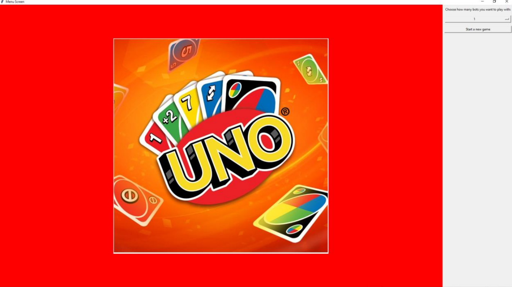
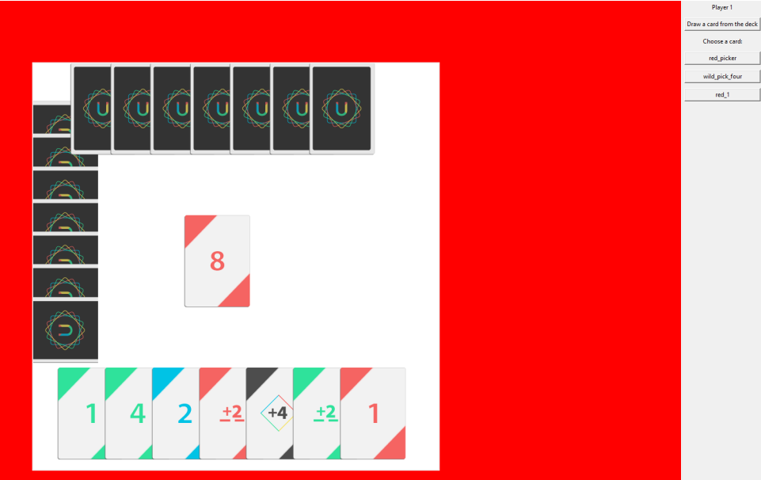
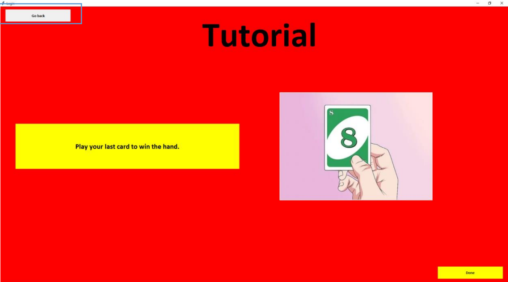

PyUNO Project

Within this project, I recreated the game UNO using Python. This was my first huge project as an intermediate python developer. Although it was my first huge project, I decided to use this project as a way for me to learn new things and encounter new problems with the hope of me tackling each and every one of them.
Whilst working through, I learnt new skills such as creating a database using SQL and utilising the library SQLite3 to store and retrieve data for scores and login information within the game. The most important skill that I learnt in my opinion was using Tkinter. Using Tkinter, I was able to create an interactive surface for the player so that it feels like the original UNO game. I learnt how to utilise animations and images using the Tkinter library and had so much fun with it.
During the final moments of this project, I decided to make more improvements by employing the use of Object-Orientated Programming. This in turn helped with the presentation of my code and made it more "cleaner". Most importantly, it made coding more efficient and free-flowing as I wouldn't have to type the same line of code over and over again and instead just override different objects I created within different classes.
Skills learnt/improved: Tkinter(intermediate) , Python(beginner -> intermediate), SQL(beginner), OOP(beginner), Cleaning code.
Github: cruzxralph
Images:
  